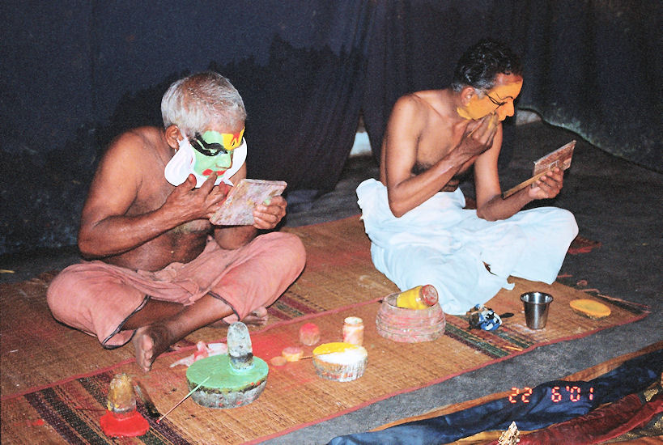

mailto:payer@payer.de
Zitierweise | cite as:
Payer, Alois <1944 - >: Sanskritkurs. -- 31. Lektion 31. -- Fassung vom 2009-01-05. -- URL: http://www.payer.de/sanskritkurs/lektion31.htm
Erstmals hier publiziert: 2008-12-25
Überarbeitungen: 2009-01-05 [Verbesserungen]
Anlass: Lehrveranstaltungen 1980 - 1984
©opyright: Dieser Text steht der Allgemeinheit zur Verfügung. Eine Verwertung in Publikationen, die über übliche Zitate hinausgeht, bedarf der ausdrücklichen Genehmigung des Verfassers
Dieser Text ist Teil der Abteilung Sanskrit von Tüpfli's Global Village Library
Falls Sie die diakritischen Zeichen nicht dargestellt bekommen, installieren Sie eine Schrift mit Diakritika wie z.B. Tahoma.
Die Devanāgarī-Zeichen sind in Unicode kodiert. Sie benötigen also eine Unicode-Devanāgarī-Schrift.
| Bildung: Vor den auslautenden Konsonanten der tiefstufigen Wurzel wird ein sog. Nasalinfix (-na- bzw. -n-) eingeschoben:
Für die Verbindung der Endkonsonanten der Wurzel mit konsonantisch beginnenden Endungen gelten dieselben Regeln wie für die 2. Präsensklasse. |
Beispiele:
युज् 7U "verbinden, anschirren"
Parasmaipada Ātmanepada
Indikativ 3. sg. युनक्ति
yu-na-j + -tiयुङ्क्ते
yu + n + j + te
(vor Guttural im Wortinnen werden Nasale durch -ṅ- ersetzt)3. pl. युञ्जन्ति
yu + n + j-antiयुञ्जते
yu + n + j-ateOptativ 3. sg. युञ्ज्यात्
yu + n + j-yā-tयुञ्जीत
yu + n + j-ī-ta
3. pl. युञ्ज्युर्
yu + n + j-y-urयुञ्जीरन्
yu + n + j-ī-ranPartizip Präsens युञ्जन्त्-
yu + n + j-ant-
fem.: युञ्जती
yu + n + j-at-ī
रुध् 7U "stoppen, zum Stillstand bringen"
| Parasmaipada |
Ātmanepada |
||
|---|---|---|---|
| Indikativ | |||
| 3. sg. | रुणद्धि ru + na + dh + ti |
रुन्द्धे ru-n + dh + te |
|
| 3. pl. | रुन्धन्ति ru-n-dh-anti |
रुन्धते ru-n-dh-ate |
|
| Optativ | |||
| 3. sg. | रुन्ध्यात् ru-n-dh-yā-t |
रुन्धीत ru-n-dh-ī-ta |
|
| 3. pl. | रुन्ध्युर् ru-n-dh-y-ur |
रुन्धीरन् ru-n-dh-ī-ran |
|
| Partizip Präsens | रुन्धन्त्- ru-n-dh-ant- रुन्धती ru-n-dh-at-ī |
| Bei einigen Wurzeln ist das -n- des schwachen Präsensstamms auch in außerpräsentische Tempora eingedrungen, sodass diese Wurzeln mit infigiertem Nasal angesetzt werden. |
Beispiel:
भञ्ज् 7P "brechen
युज् 7U युनक्ति : anschirren, anjochen, anspannen, befestigen ; Ā auch: sich anspannen (= sich anstrengen), sich verbinden mit, sich konzentrieren auf (Lokativ, सप्तमी)
Fut. योक्ष्यति
Pass. युज्यते
Kaus. योजयति
PPP युक्त
Inf. योक्तुम्davon:
युग n.: Joch, Paar, Weltzeitalter (es gibt vier Weltzeitalter:
- कृत
- त्रेता
- द्वापर
- कलि
Das कलियुग begann um 3102 v. Chr., dem Jahr des महाभारत-Krieges. Näheres bei Basham, Wonder S. 323)
योग m.: "Anschirrung, Anspannung", Anstrengung, Verbindung, Yoga (siehe dazu Basham, Wonder S. 327ff.)
Abb.: योगः
[Bildquelle:
http://www.flickr.com/photos/wricontest/294029791/. -- Zugriff am
2008-12-25. --
 Creative
Commons Lizenz (Namensnennung)]
Creative
Commons Lizenz (Namensnennung)]
रुध् 7U रुणद्धि : stoppen, zum Stillstand bringen, zurückhalten = einschließen, verdecken
Fut. रोत्स्यति
Pass. रुध्यते
Kaus. रोधयति
PPP रुद्ध
Inf. रोद्धुम्
छिद् 7U छिनत्ति : abschneiden
Fut. छेत्स्यति
Pass. छिद्यते
Kaus. छेदयति
PPP छिन्न
Inf. छेत्तुम्
भञ्ज् 7P भनक्ति : (etwas) zerbrechen
Fut. भङ्क्ष्यति
Pass. भज्यते
PPP भग्न
अञ्ज् 7P अनक्ति : salben, beschmieren
Fut. अङ्क्ष्यति । अञ्जिष्यति
Pass. अज्यते
Kaus. अञ्जयति
PPP अक्त
Inf. अञ्जितुम् । अङ्क्तुम्
अञ्ज् + वि 7Ā व्यङ्क्ते : auseinanderschmieren = sich schminken, sich unterschieden machen
PPP व्यक्त : unterschieden, entfaltet
davon
व्यञ्जन n.: Unterscheidungsmittel = Schminke, Gewürz, Kennzeichen, Konsonant (das, wodurch die Bedeutungen unterschieden werden)

Abb.: व्यञ्जनम्
Vorbereitung zum Kathakali-Tanz =
കഥകളി, Kochi =
കൊച്ചി
[Bildquelle: winchrisabi. --
http://www.flickr.com/photos/winchrisabi/181399508/. -- Zugriff am
2008-12-25. --
 Creative
Commons Lizenz (Namensnennung)]
Creative
Commons Lizenz (Namensnennung)]
भिद् 7U भिनत्ति : spalten
Fut. भेत्स्यति
Pass. भिद्यते
Kaus. भेदयति
PPP भिन्न
Inf. भेत्तुम्
भुज् 7U भुनक्ति : genießen (z.B. Essen ; "die Erde genießen" = die Erde beherrschen)
Fut. भोक्ष्यति
Pass. भुज्यते
Kaus. भोजयति
PPP भुक्त
Inf. भोक्तुम्davon
भोग m.: Genuss, Essen, Lust, Nutzen, Steuer, Abgabe
बन्ध् 9P बध्नाति (!): binden, anbinden
Fut. भन्त्स्यति
Pass. बध्यते
Kaus. बन्धयति
PPP बद्ध
Inf. बन्द्धुम्davon:
बन्धन n.: Binden, Fessel
ज्ञा + प्र 9U प्रजानाति : erkennen, verstehen
davon:
प्रज्ञा f.: Weisheit, Erkenntnis
Abb.: Aus einem प्रज्ञापारमिता-Manuskript
[Bildquelle: zeno.org. -- gemeinfrei]
भू + सम् 1P सम्भवति : entstehen, existieren
शरीर n.: Leib, Körper
A) Übersetzen Sie folgende Sätze und lösen Sie die Komposita auf:
प्रज्ञा दुःखसम्भवं रुन्ध्यादिति बुद्धिमानार्यबुद्धमार्गेण गच्छेत् ॥१॥
शस्त्राणि शरीरमेव छिन्दन्ति जीवस्तु न म्रियत इति भगव्द्गीतायां भगवतोच्यते ॥२॥
Abb.: शस्त्राणि
शरीरमेव छिन्दन्ति जीवस्तु न म्रियत इति भगव्द्गीटायां भगवतोच्यते
"Tanks of 18th Cavalry (Indian Army) on the move during the 1965 Indo-Pak War."
[Bildquelle: Hari Singh Deora / Wikipedia. -- Public domain]
बुद्ध्या युक्तो दुःखान्मुच्यते तस्मान्मोक्षमिच्छन्नरो योगेन युञ्जीत ॥३॥
पुत्रो जातो बन्धनं जातमिति सुगतो मत्वा कुलबन्धनं भिनत्ति । ततो भग्नबन्धो मोक्षनयन्तीं प्रज्ञामाप्तुमर्हति ॥४॥
Abb.: राहुलो जातो बन्धनं जातम् (इति गौतमबोधिसत्त्वः)
राहुल, der Sohn Buddhas, Laos
[Bildquelle: Sacca / Wikipedia. GNU
FDLicense]
समोहः स्वन्नानि च सुरूपाश्च भुङ्क्ते वीतमोहस्त्वन्नं च सम्पन्नरूपशरीरां च न लुभ्यति । स हि लोभं च क्रोधं च रुणद्धि प्रज्ञायां च युङ्क्ते ॥५॥
B) Bilden Sie zu folgenden Wurzeln der 7. Klasse alle 3. Personen Singular und Plural, P und Ā, des Indikativ und Optativ Präsens:
१. छिद्
२. भिद्
३. भुज्
४. अञ्ज् (nur P)
५. भञ्ज् (nur P)
Zu Lektion 32